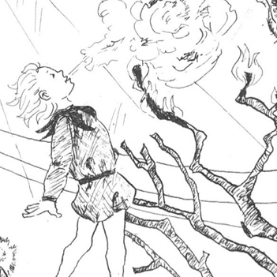
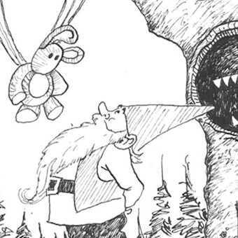
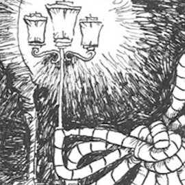
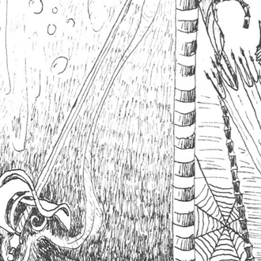

Projekte
Illustration Anthologie
Der Verein Schreibende Schüler e.V. fördert jüngste Literatur, also Kinder und Jugendliche beim Kreativen Schreiben. 2016 hatte ich die Ehre, eine Illustration für ihre neuste Anthologie alles still, alles laut anfertigen zu dürfen.
Jede Illustration in diesem kleinen Buch stand am Anfang eines Kapitels, das ca. 15 ausgewählte Texte beherbergte. Bei meiner Arbeit war es mir daher sehr wichtig, niemanden zu kurz kommen zu lassen und alle Gedichte und Kurzgeschichten zu berücksichtigen. So vereinte ich Bilder aus jedem Text in meiner Illustration und schaffte so ein kurioses Wimmelbild, in dem es viel zu entdecken gibt. Einzelne Elemente werden auch erst dann verständlich, wenn man die dazugehörigen Texte liest.
Weitere Informationen zu dem Projekt finden Sie auf der Webseite des Vereins. Dort kann die Anthologie auch auf Wunsch erworben werden.
- 
- 
- 
- 